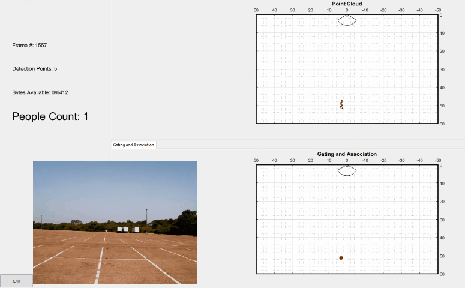
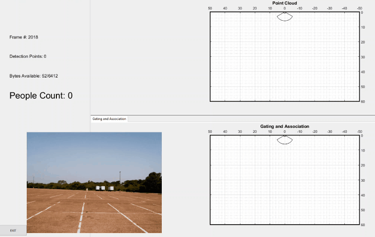
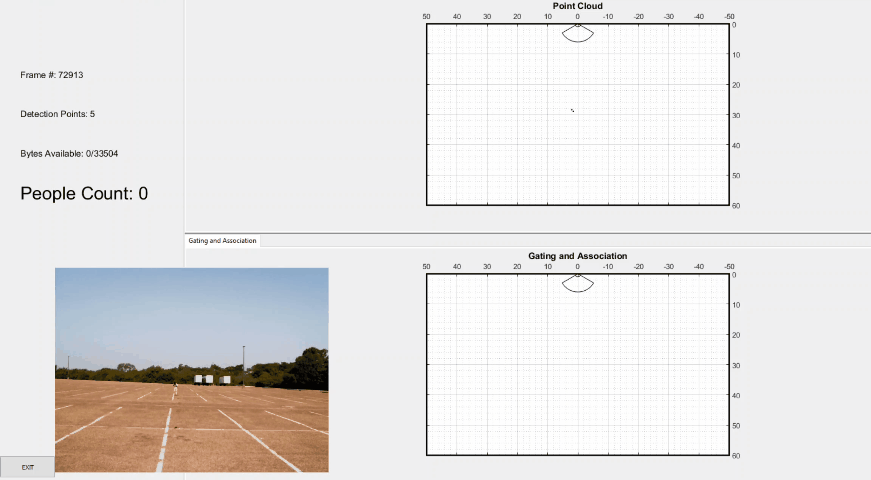
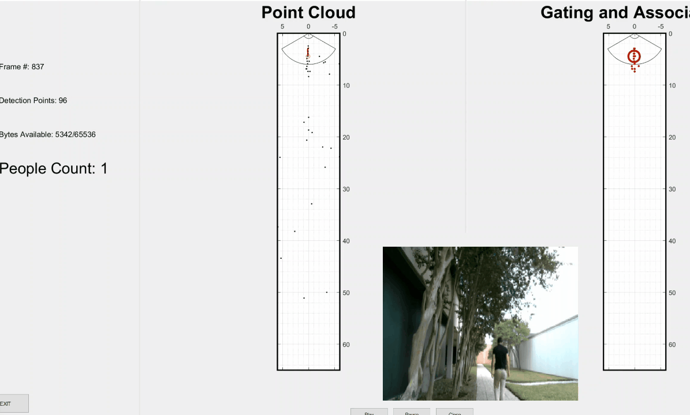

Introduction
The objective of this experiment is to show the capabilities of the IWR1642BOOST with GTrack software to detect humans at long range and filter false detections due to trees and shrubbery. The experiment was performed outdoors in an empty parking lot, a corridor with low trees and shrubbery, and a parking lot with larger trees. In all scenarios, there was enough room that the test subject could enter and exit the effective range of the device at different angles and speeds.
Setup
The following setup was performed with an IWR1642BOOST EVM in a parking lot.
Hardware Setup:
- Testing was done in three separate locations.
- Empty Parking Lot
- Corridor with low trees
- Parking Lot with larger trees
- The IWR1642BOOST was mounted on a tripod at 2.25 meters
- The EVM was tilted down 15 degrees.
- A webcam was mounted on the tripod next to the EVM to show the base truth.
- Cones were placed in a straight line in front of the tripod-mounted EVM at 5 meter intervals.
- The People Counting demo was tested at different angles:
- Start point: -60 degrees
- End Point: 60 degrees
- Step Size: 15 degrees
- 0 degrees is bore-sight
- The target moved in three different ways:
- Walking: 1.5 m/s
- Running: 7.5 m/s
- Crouching: 1.5 m/s
- Lower RCS
Software Setup:
- The IWR1642BOOST EVM was calibrated using the technique described in the Out of Box Demo User's Guide.
- After calibration, the EVM was flashed with the Traffic Monitoring demo available in the mmWave Industrial Toolbox.
- This experiment was done with Industrial Toolbox version 2.5.1, which is the first version to incorporate changes to CFAR that improve detection at range. Please note that older versions of the software may have poorer performance at range.
- The default install location of this demo is: C:\ti\mmwave_industrial_toolbox_2_5_1\labs\lab0013_traffic_monitoring_16xx\prebuilt_binaries\traffic_monitoring_16xx_lab.bin
- The People Counting GUI was used. This can also be found in the mmWave Industrial Toolbox.
- The default install location is: C:\ti\mmwave_industrial_toolbox_2_5_1\labs\lab0011-pplcount\lab0011_pplcount_quickstart\pplcount_gui.exe
- If you prefer the Traffic Monitoring toolset, you can use the traffic monitoring GUI found at: C:\ti\mmwave_industrial_toolbox_2_5_1\labs\lab0013_traffic_monitoring_16xx\gui\tm_demo.exe
- The EVM was configured with the 50m chirp available in the mmWave Industrial Toolbox.
- The default install location is: C:\ti\mmwave_industrial_toolbox_2_5_1\chirps\images\People+Tracking+and+Counting+Application\50m_longRangeTM.cfg
- GTrack is part of the Traffic Monitoring and People Counting demos available on TIREX, and is featured in the mmWave SDK. This is tracking software built for radar that uses clustering to identify targets from detection points returned by the radar. For more, see
Procedure:
For each test case, the experiment was conducted as follows:
- EVM was set at the proper angle
- Web cam was rotated to point at the walking path
- Target moved away until out of detection range, roughly 60 meters
- Target moved back to EVM
- Detection range is based on the allocated tracker, not the point cloud
- Range at which the tracker disappears when target is departing
- Range at which the tracker is first allocated when target is approaching
- False Detection mitigation is tested by putting the EVM in a challenging environment and having a human target walk near bore-sight.
- A camera is mounted with the EVM to show base truth.
Results:
The experiment shows that the IWR1642BOOST can detect and track a human at 50 meters in a 30 degree Field of View. Detection range diminishes with angle past +-15 degrees, with minimum detection at 20 meters when the human target is 60 degrees past bore-sight.
Walking Results:
The walking test was performed at 9 different angles. The device has better detection range when the human is departing. This is due to high requirements to allocate a track to a cluster of points, but low requirements to maintain the track. For example, as long as the human returns a detection point, the device can maintain a track on the object, but to allocate a track, it requires 4 detection points for five consecutive frames.
| Angle (degrees) | Detection Range Departing (m) | Detection Range Approaching (m) | Speed | Vmax Extension Enabled |
|---|---|---|---|---|
| -60 | 25 | 12 | Walking | NA |
| -45 | 32 | 21 | Walking | NA |
| -30 | 41 | 33 | Walking | NA |
| -15 | 56 | 41 | Walking | NA |
| 0 | 56 | 48 | Walking | NA |
| 15 | 56 | 40 | Walking | NA |
| 30 | 42 | 35 | Walking | NA |
| 45 | 32 | 24 | Walking | NA |
| 60 | 18 | 7 | Walking | NA |
Walking away from device at bore-sight:

Walking toward the device at bore-sight:

Running Results:
The running test was performed at bore-sight, with Vmax extension enabled and with Vmax extension disabled.
| Angle (degrees) | Detection Range Departing (m) | Detection Range Approaching (m) | Speed | Vmax Extension Enabled |
|---|---|---|---|---|
| 0 | 50 | 20 | Running | No |
| 0 | 50 | 21 | Running | Yes |
Running Away from device at bore-sight:

Running toward device at bore-sight:

Sneaking Result:
The sneaking test was performed once, with a crouching human slowly departing then approaching the device at bore-sight. The lower RCS of a sneaking person made detection more difficult for the device.
| Angle (degrees) | Detection Range Departing (m) | Detection Range Approaching (m) | Speed | Vmax Extension Enabled |
|---|---|---|---|---|
| 0 | 56 | 28 | Slow Walking/Sneaking | No |
Sneaking toward device at bore-sight:

False Detection Mitigation Results:
Two environments were tested for false detection mitigation. In both locations, trees and other plants are blown around by the wind, resulting in the radar returning detected points to the GTrack software. By intelligently grouping and tracking the detected points, the software can successfully track the human without tracking the trees and shrubs.
In the first scene, a person approaches the IWR1642BOOST device in a parking lot. Trees and bushes in and around the parking lot are blown in the wind, causing a very noisy point cloud. You can see that only the person is tracked.

In the second scene, a person walks away from the IWR1642BOOST. Small trees to the left and above the person are blowing in the wind, creating many detection points. Again, GTrack filters out the trees and only the person is tracked.

In these scenes, the "noisy" point cloud takes different forms. In the first scene, large trees and dense bushes create localized point clouds that have tight clusters in a single location. In the second scene, the overhanging trees create a more sporadic, spread out point cloud. In both environments, the GTrack software is able to successfully track the human target with tracking trees or bushes.
Conclusion
- This experiment demonstrates the ability of the IWR1642BOOST to detect people as far away as 50 meters. This capability could be used in application such as IPNC to reliably detect people.
- One device can be used to monitor a large area, reducing the number of cameras and personnel required to monitor an area.
- GTrack allows static shrubbery and trees to be easily filtered out, reducing false detections in challenging environments.